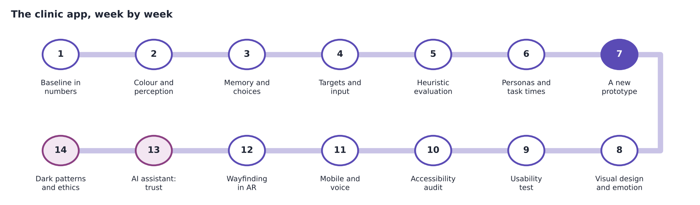
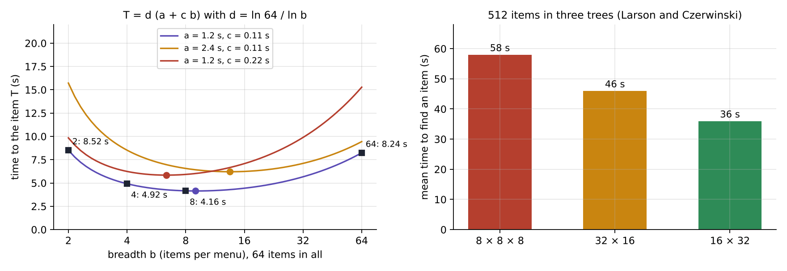
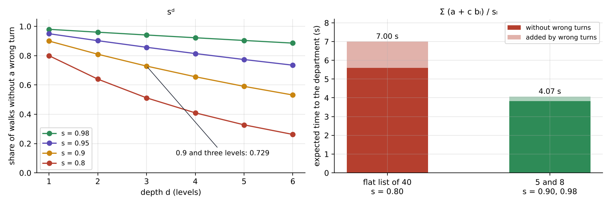
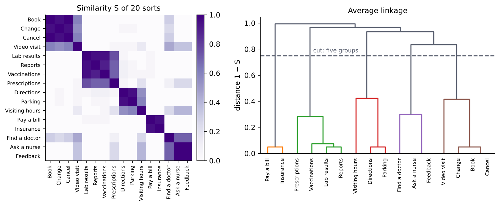
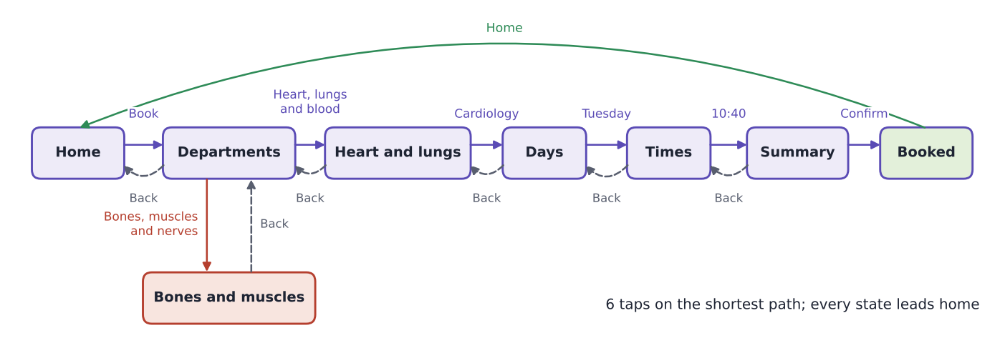
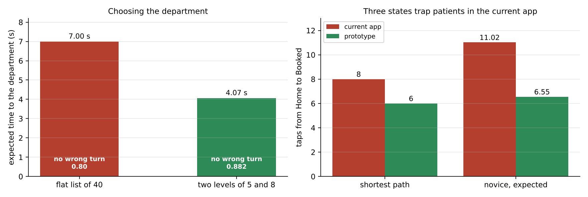

Overview
Weeks 1 to 6 measured the clinic app and found out who its patients are. This week turns the findings into a prototype that people can try. It starts with the fidelity of prototypes, from paper to code. The menus of the app form a tree, and a model predicts how breadth, depth and the clarity of labels decide the time to a department. Card sorting asks future users how they group the content. A state machine describes the prototype exactly, so its traps and its shortest paths can be found before any test. The clinic app reaches stage 7, a checked prototype of the new booking flow. The Python step writes such a machine as a class, and the week closes with Wizard of Oz studies of assistants based on artificial intelligence (AI).
Week at a glance
flowchart LR A["Prototypes and fidelity"] --> B["Menu trees: Breadth and depth"] B --> C["Information scent"] C --> D["Card sorting"] D --> E["State machines"] E --> F["Interface clinic"] F --> G["The human side"] G --> S["The clinic app, stage 7"] S --> H["Toward human-AI interaction"]
Every method on this page is also written as Python code in the Colab notebook of the week. Its code is divided into numbered sections. Each orange box on this page names the section whose code carries out what the text above the box explains. The box says what to run and what to look at in that section, and its button opens the Colab notebook at that place. The games, the practice parts and the self-assessment of the week are in the interactive lab. Each violet box opens one part of the interactive lab. The part ends with a link back to its box on this page, and the Colab notebook is always opened from the orange boxes here.
Python step 7: Classes and events
Python code in the Colab notebook, right after Section 0 (setup). Open the Colab notebook and run this step cell by cell: It consists of short pieces of Python code with their explanations, a quick check and three exercises. Topics: A class with attributes and methods · A state machine as a class · Events that change the state · Counting ignored events.
The step continues with Python [1] and introduces classes, which bundle data with the functions that act on them. It defines a small counter first and then a state machine whose rules map a state and an event to the next state. A loop feeds it a list of taps, as a user would. Students who have never programmed start with the start-here notebook of the course.
Weeks 1 to 5 measured the booking flow and fitted its colours, menus and targets to human abilities. Week 5 ranked sixteen problems, and Week 6 described three personas and predicted their booking times.
This week builds these results into a prototype of the new booking flow. Stage 7 chooses the menu of departments and checks the flow as a state machine before Week 9 tests it with patients.

Prototypes and fidelity
A prototype is a draft of a design that people can try before it is built. Houde and Hill asked what a prototype is meant to explore [2]. It can explore the role of a product in the lives of its users, its look and feel, or its implementation. A paper sketch answers questions about the role and the flow of a booking, while a coded prototype shows how fast the screens respond.
| Fidelity | Example | Good for | Cost |
|---|---|---|---|
| Low | Paper sketches and sticky notes | Flow, structure and early ideas | Minutes per screen |
| Medium | Clickable wireframes without colour | Navigation and wording | Hours |
| High | A coded or detailed digital prototype | Look and feel, timing and tests of a near-final design | Days, and every change is expensive |
Rudd, Stern and Isensee weighed the two ends of the scale [3]. Low-fidelity prototypes are cheap and fast and let a team compare several concepts. High-fidelity prototypes are fully interactive and serve as a living specification of the product. Walker, Takayama and Landay compared prototypes of a website at low and high fidelity, on paper and on a computer [4]. They found no reliable difference in the number of usability issues that the prototypes revealed.
A paper prototype needs a person who plays the computer: After each tap of a participant, this person lays down the next screen. The rules that this person follows are the subject of the last section before the interface clinic.
Check your understanding. Which question can a paper prototype of the booking flow answer best?
Menu trees: Breadth and depth
The menus of an app form a tree. A tree with \(b\) items in each menu and \(d\) levels holds \(N = b^d\) items, so the same items can be arranged broad and shallow or narrow and deep. Each level costs a fixed time \(a\) for the screen, the decision and the tap, and a time \(c\) for each label that must be read. Week 3 modelled a single menu; a tree repeats such a menu at every level:
\(T\) is the time to reach one item in seconds, and \(d\) counts the menus on the way. A broad menu takes longer to read but saves levels. Setting the derivative of \(T\) with respect to \(b\) to zero gives the fastest breadth, the solution of \(b(\ln b - 1) = a/c\).
→ This formula with numbers, step by step: Lab Part B, calculator, steps 1 to 3.
A worked example. The values \(a = 1.2\) s and \(c = 0.11\) s reproduce the flat menu of 40 departments of Week 3: \(1.2 + 0.11 \times 40 = 5.60\) s. For 64 items, breadth 2 needs six levels and \(6 \times (1.2 + 0.22) = 8.52\) s. Breadth 4 needs \(3 \times 1.64 = 4.92\) s, breadth 8 needs \(2 \times 2.08 = 4.16\) s, and one list of 64 needs \(1.2 + 7.04 = 8.24\) s. With \(a/c = 10.9\), the fastest breadth is about 9.
Animation. The tree of 64 departments for the chosen breadth. Play scans the labels of each level, yellow, before it opens the right one, green, and the clock in the right panel adds the time. The sliders set \(a\) and \(c\), and the curve shows the model for every breadth with its fastest breadth.
Studies agree with the shape of the model. Miller arranged 64 items as six menus of two, three of four, two of eight and one of 64 [5]. The two levels of eight were the fastest and the most accurate. Larson and Czerwinski asked the same question on the web with 512 links and 19 participants [6]. Items were found in 36 s with 16 and then 32 links, in 46 s with 32 and then 16 links, and in 58 s with three levels of eight. In the deep tree, participants also got lost most often.

Check your understanding. A tree has breadth 4 and holds 64 items. How many menus does a walk pass?
Part A of the interactive lab turns the menus into a building. A wayfinding board leads through doors to the next board, and you find departments in three trees of 64 departments.
Interactive lab, Part A. Signposts in the hospital in 3D: Twelve walks to departments in trees of breadth 4, 8 and 64, timed with every wrong turn. The results can be copied into the Colab notebook.
Python code in the Colab notebook, Section 1. Open Section 1 of the Colab notebook and run it. The function tree_time carries out the formula of this section and is checked on the worked example. Paste the results of Part A into MY_SIGNS, and the code fits \(a\) and \(c\) to your walks with least squares. A figure compares your times with the model.
- Count the menus that you pass in the settings of your phone to reach the brightness of the display. Would a broader menu be faster?
- When is a deep tree better than a broad one, for example on the small screen of a watch?
Information scent
Pirolli and Card described how people search for information as animals forage for food [7]. Users follow the information scent of labels: The cues that suggest which path leads to their goal. A label with a strong scent, such as Heart, lungs and blood for a patient of cardiology, is chosen right almost always. A vague label, such as Services, sends many users the wrong way.
Let \(s\) be the probability of choosing the right label at one level. A walk without a wrong turn needs the right label at every level. If a wrong turn is noticed one level down and costs one more pass of the level, each level is passed \(1/s\) times on average:
\(P_0\) is the share of walks without a wrong turn. \(b_l\) and \(s_l\) are the breadth and the probability of level \(l\), and \(E[T]\) is the expected time in seconds.
→ These formulas with numbers, step by step: Lab Part B, calculator, steps 4 and 5.
A worked example. With \(s = 0.9\) at each of three levels, \(P_0 = 0.9^3 = 0.729\), so more than a quarter of the walks take at least one wrong turn. The tree of breadth 4 then needs \(E[T] = 3 \times 1.64 / 0.9 = 5.47\) s instead of 4.92 s. Two levels with the same labels keep \(0.9^2 = 0.81\) of the walks free of wrong turns, one more reason for broad trees with clear labels.

Tree testing measures \(s\) before any screen is drawn: Participants see only the labels of the tree as text and choose where they would look for a task. Section 2 of the Colab notebook estimates \(s\) from the wrong turns of your walks in Part A.
Check your understanding. Labels are chosen right with \(s = 0.95\) at each of two levels. What share of the walks has no wrong turn?
Interactive lab, Part B. The time and the scent of a menu tree step by step, from the depth to the expected time, with four presets.
Python code in the Colab notebook, Section 2. Open Section 2 of the Colab notebook and run it. The function time_with_errors carries out the second formula of this section and is checked on the worked example. The code estimates \(s\) for each tree of your walks and the share without a wrong turn. A figure compares your trees with the curves of \(s^d\).
- Find a vague label in an app or on a website that you use. What would a stronger label say?
- Why can a label that is clear to the staff of a hospital be vague for its patients?
Card sorting
Card sorting asks future users how they group the content of a system. Each card names one item, such as a service of the app. In an open card sort, participants form and name their own groups. In a closed card sort, they sort the cards into given groups. The sorts of many participants are combined through the share of participants who put two cards together:
\(n\) is the number of participants and \(n_{ij}\) the number who put cards \(i\) and \(j\) in the same group. \(S_{ij}\) is the similarity and \(D_{ij}\) the distance of the two cards, both between 0 and 1. Hierarchical clustering joins the two closest cards or groups again and again. With average linkage, the distance between two groups is the mean of the distances between their cards. The joins form a tree, a dendrogram, and cutting it gives the groups of a menu.
A worked example. Four participants sort Parking, Directions and Visiting hours. Three of them put Parking and Directions together, two put Directions and Visiting hours together, and one puts Parking and Visiting hours together. The distances are \(1 - 3/4 = 0.25\), \(1 - 2/4 = 0.50\) and \(1 - 1/4 = 0.75\). Parking and Directions join first. Visiting hours then joins them at the average distance \((0.75 + 0.50)/2 = 0.625\).
Lantz and colleagues compared card sorts with ratings of all pairs of the same items [8]. About 10 to 15 participants estimated the similarities well, and more participants added little. The code of Section 3 clusters the sorts with SciPy, a library of scientific algorithms for Python [9].

Check your understanding. Six of eight participants put two cards together. What is the distance of the two cards?
Interactive lab, Part C. A card sort in 3D: Sixteen services of the clinic app, sorted into up to five named piles at the meeting table. The results can be copied into the Colab notebook.
Python code in the Colab notebook, Section 3. Open Section 3 of the Colab notebook and run it. The function similarity turns sorts into the shares \(S_{ij}\), and SciPy joins the cards with average linkage. Paste the results of Part C into MY_CARDS, and the code compares your sort with the groups of the class and lists the most disputed pairs. A figure draws the dendrogram with its cut.
- Would doctors and patients sort the services of the app in the same way? Which cards would they place differently?
- When should a team overrule the result of a card sort?
State machines and interactive prototypes
Every interactive prototype is a state machine. It has a set of states, such as the screens of the app, and a set of events, such as taps. Rules say which event leads from which state to which next state. Harel extended such machines to statecharts, which nest states and run parts in parallel, so that large systems stay readable [10].
Written as a machine, a prototype can be checked before anyone tests it. A search from the home screen gives the shortest path to the goal, and a search toward home finds states that trap the user. Thimbleby, Cairns and Jones added probabilities to the rules and predicted with Markov models how many actions users need [11]. With \(t_s\) the expected taps from state \(s\) to the goal and \(p_{ss'}\) the probability of a move from \(s\) to \(s'\),
Each tap leads to a next state, so the expected taps of a state are one plus the expected taps of the states that follow, weighted by their probabilities. One equation per state gives a system of linear equations. In matrix form, \(t = (I - Q)^{-1}\mathbf{1}\), where \(Q\) holds the probabilities between the states other than the goal.
→ These equations with numbers, step by step: Lab Part D, calculator, steps 1 to 5.
A worked example. A home screen H leads to a list D of departments. From the list, a patient reaches the times T with the probability 0.8 and returns home with 0.2. From the times, the patient books with 0.9 or returns to the list with 0.1. So \(t_H = 1 + t_D\), \(t_D = 1 + 0.8\,t_T + 0.2\,t_H\) and \(t_T = 1 + 0.1\,t_D\). Inserting the first and the last equation gives \(t_D = 2 + 0.28\,t_D\), so \(t_D = 2/0.72 = 2.778\). Then \(t_T = 1.278\) and \(t_H = 3.778\) taps, against 3 taps on the shortest path.
Scene: The prototype wall. The design team pins the screens of the booking flow to a cork board and joins them with strings for the transitions. Purple strings lead toward the goal, red strings are wrong turns, and grey strings lead back. A marker walks the board like a patient: An expert takes the shortest path, and a novice takes wrong turns with the probabilities of stage 7. The buttons switch between the current app, which traps patients in three states, and the prototype, and they run 100 novices to compare their mean with the Markov model.

Check your understanding. From a screen, a patient reaches the goal with the probability 0.5 per tap and otherwise stays. How many taps are expected?
Check your understanding. What does a state without a way home mean for a patient?
Interactive lab, Part D. A paper prototype in 3D: You are the computer for eleven taps of a participant and lay down the next paper screen, with the Markov model step by step. The results can be copied into the Colab notebook.
Python code in the Colab notebook, Section 4. Open Section 4 of the Colab notebook and run it. The functions shortest, no_way_home and expected_taps check a machine and carry out the formula of this section; the last is checked on the worked example. Paste the results of Part D into MY_PAPER, and the class Machine of the Python step replays your session.
- Find a screen in an app that offers no way back. How did you leave it?
- Should every screen have a way home? Name a screen where a way home could harm, for example in the middle of a payment.
Interface clinic: Navigation on the clinic screens, before and after
The four pairs below show screens of the clinic app before and after a redesign. Each pair names the idea of this week that the redesign applies.
Interface clinic: Where am I? A list of doctors after a choice of department.
BeforeA list without a context
Nothing says which department the patient chose. A patient who took a wrong turn cannot notice it.
AfterThe title and the path
The title and the path show where the patient stands, and a wrong turn is visible at once.
Interface clinic: Labels with scent. The home screen of the app.
BeforeWords of the system
No label tells a patient where a booking lives, so the information scent is weak at the first step.
AfterWords of the tasks
Each label names a task in the words of patients, as the card sort grouped them.
Interface clinic: A screen without an exit. The step that asks for the patient number.
BeforeOnly forward
The screen has no Back and no Cancel. The state machine check finds it as a state without a way home.
AfterBack, Cancel and the card
Every way out is visible, and the card makes typing the number optional.
Interface clinic: Six levels to a department. The path to the cardiologists.
BeforeA deep tree
Six levels multiply the chances of a wrong turn: With \(s = 0.9\) per level, only 0.53 of the walks arrive without one.
AfterTwo levels and a search
Two levels keep \(0.9^2 = 0.81\) of the walks free of wrong turns, and the search skips the tree for patients who know a word.
- Which of the four screens marked Before would cost patients the most wrong turns?
- Which redesign changes the state machine, and which changes only the scent of its labels?
The human side: Rough on purpose
Teams often keep early prototypes rough on purpose. Participants then comment on the flow instead of the colours, and the team does not grow attached to a design that took days to build. A sketch on paper also signals that every screen may still change.
The person who plays the computer must follow the rules exactly, even when a participant struggles. A helpful computer hides the very problems that the test should find. When participants were not told that a person played the system, they are told after the session.
A good road sign gives the next decision at the next junction, not the whole map. Drivers follow the scent of the signs, and one missing sign sends them the wrong way, however good the others are.
- What should the computer do when a participant taps a part of the paper that the prototype does not cover?
- Is it fair to let participants believe that a system is real? When would you tell them?
The clinic app, stage 7: A prototype of the new booking flow
Stage 7 builds the redesign of Weeks 3 to 6 into a prototype and checks it before Week 9 tests it with patients. The frequent departments of Week 3 stay at the top of the first screen. The stage answers two questions: How should the other patients reach their department, and does the flow lead every patient to the goal and back?
| Menu of departments | Breadth | Probability \(s\) | Expected time |
|---|---|---|---|
| Current: one list of 40, A to Z | 40 | 0.80 | 7.00 s |
| Prototype: 5 categories, then 8 departments | 5 and 8 | 0.90 and 0.98 | 4.07 s |
For the list, \(E[T] \)\({}= (1.2 + 0.11 \times 40)/0.80 \)\({}= 5.60/0.80 \)\({}= 7.00\) s. For the two levels, \(E[T] \)\({}= 1.75/0.90 \)\({}+ 2.08/0.98 \)\({}= 1.944 \)\({}+ 2.122 \)\({}= 4.07\) s. A share of \(0.90 \times 0.98 = 0.882\) of the walks has no wrong turn, instead of 0.80. The probability 0.80 repeats the slip rate of the department step of Week 1. The values 0.90 and 0.98 are assumptions for labels taken from the card sort, and Week 9 measures them.
| State machine | Current app | Prototype |
|---|---|---|
| States | 15 | 8 |
| Shortest path from Home to Booked | 8 taps | 6 taps |
| Expected taps of a novice | 11.02 | 6.55 |
| States without a way home | 3 | 0 |
The current app traps patients on the screens Number, Wrong number and Booked: None of them has a way home, and a wrong number can only be typed again. The prototype adds Back to every screen and Home to the confirmation. The probabilities of the novice model are listed in Section 5 of the Colab notebook.

| Question of stage 7 | Answer of the analysis | Where |
|---|---|---|
| How should patients reach their department? | Five categories, then eight departments: 4.07 s instead of 7.00 s | Section 5 |
| How many taps does a booking take? | 6 on the shortest path and 6.55 for a novice, instead of 8 and 11.02 | Section 5 |
| Can every patient get back home? | Yes; the current app traps patients in three states | Section 5 |
Stage 7 gives Week 8 a flow to style and Week 9 a prototype to test. The probabilities of the novice model are assumptions, and the test of Week 9 shows whether 6.55 taps hold.
Check your understanding. Why does the prototype need fewer taps than the current app, even for experts?
Interactive lab, Part E. Stage 7 by hand: A tree of four categories with ten departments each, its expected time and its share of walks without a wrong turn.
Python code in the Colab notebook, Section 5. Open Section 5 of the Colab notebook and run it. The code collects the results of stage 7 in the dictionary STAGE7. It holds the expected times of both menus, the shares without a wrong turn, the shortest paths, the expected taps of a novice and the states without a way home. A figure draws the two panels of the figure above.
Your application
The model of breadth, depth and scent applies to any menu tree. The Colab notebook holds an application switch with four further apps: Online banking, an e-government service, food delivery and course registration at a university. Each has a current tree and a redesign for one frequent task.
Python code in the Colab notebook, Section 6. Open Section 6 of the Colab notebook, set APP to one of the five names in the comment and run the cell. The code computes the expected time of both trees with time_with_errors and the share of walks without a wrong turn.
Toward human-AI interaction
A conversational assistant is hard to prototype on paper, because its answers depend on what users say. In a Wizard of Oz study, a hidden person, the wizard, produces the answers of the system, while participants believe that they talk to a computer. Dahlbäck, Jönsson and Ahrenberg used such studies to collect the language that people actually address to a dialogue system [12].
Part D of this week made you the computer of a paper prototype, the same role in a simpler form. A wizard who answers better than any real system would teach the team the wrong lessons, so wizards usually follow written rules. The logs of the sessions then show which questions patients ask and how they phrase them.
Suppose that the team tests a chat assistant for bookings. A nurse in the next room types the answers by a script. It has three rules: Answer only about bookings, ask one question at a time and say when you do not know. The script keeps the wizard as limited as a real assistant would be, and the transcripts become the first data for its design.
- What could go wrong if the wizard is friendlier and smarter than the assistant that is built later?
- How would you tell participants after the session that a person answered, and why does it matter?
Review cards
Select a card to turn it over.
References
[1] Van Rossum, G., & Drake, F. L. (2009). Python 3 Reference Manual. CreateSpace.
[2] Houde, S., & Hill, C. (1997). What do prototypes prototype? In M. G. Helander, T. K. Landauer, & P. V. Prabhu (Eds.), Handbook of Human-Computer Interaction (2nd ed., pp. 367-381). Elsevier. https://doi.org/10.1016/B978-044481862-1.50082-0
[3] Rudd, J., Stern, K., & Isensee, S. (1996). Low vs. high-fidelity prototyping debate. Interactions, 3(1), 76-85. https://doi.org/10.1145/223500.223514
[4] Walker, M., Takayama, L., & Landay, J. A. (2002). High-fidelity or low-fidelity, paper or computer? Choosing attributes when testing web prototypes. Proceedings of the Human Factors and Ergonomics Society Annual Meeting, 46(5), 661-665. https://doi.org/10.1177/154193120204600513
[5] Miller, D. P. (1981). The depth/breadth tradeoff in hierarchical computer menus. Proceedings of the Human Factors Society Annual Meeting, 25(1), 296-300. https://doi.org/10.1177/107118138102500179
[6] Larson, K., & Czerwinski, M. (1998). Web page design: Implications of memory, structure and scent for information retrieval. In Proceedings of the SIGCHI Conference on Human Factors in Computing Systems (pp. 25-32). ACM. https://doi.org/10.1145/274644.274649
[7] Pirolli, P., & Card, S. (1999). Information foraging. Psychological Review, 106(4), 643-675. https://doi.org/10.1037/0033-295X.106.4.643
[8] Lantz, E., Keeley, J. W., Roberts, M. C., Medina-Mora, M. E., Sharan, P., & Reed, G. M. (2019). Card sorting data collection methodology: How many participants is most efficient? Journal of Classification, 36(3), 649-658. https://doi.org/10.1007/s00357-018-9292-8
[9] Virtanen, P., Gommers, R., Oliphant, T. E., Haberland, M., Reddy, T., Cournapeau, D., Burovski, E., Peterson, P., Weckesser, W., Bright, J., van der Walt, S. J., Brett, M., Wilson, J., Millman, K. J., Mayorov, N., Nelson, A. R. J., Jones, E., Kern, R., Larson, E., Carey, C. J., Polat, İ., Feng, Y., Moore, E. W., VanderPlas, J., Laxalde, D., Perktold, J., Cimrman, R., Henriksen, I., Quintero, E. A., Harris, C. R., Archibald, A. M., Ribeiro, A. H., Pedregosa, F., van Mulbregt, P., & SciPy 1.0 Contributors. (2020). SciPy 1.0: Fundamental algorithms for scientific computing in Python. Nature Methods, 17(3), 261-272. https://doi.org/10.1038/s41592-019-0686-2
[10] Harel, D. (1987). Statecharts: A visual formalism for complex systems. Science of Computer Programming, 8(3), 231-274. https://doi.org/10.1016/0167-6423(87)90035-9
[11] Thimbleby, H., Cairns, P., & Jones, M. (2001). Usability analysis with Markov models. ACM Transactions on Computer-Human Interaction, 8(2), 99-132. https://doi.org/10.1145/376929.376941
[12] Dahlbäck, N., Jönsson, A., & Ahrenberg, L. (1993). Wizard of Oz studies: Why and how. In Proceedings of the 1st International Conference on Intelligent User Interfaces (pp. 193-200). ACM. https://doi.org/10.1145/169891.169968